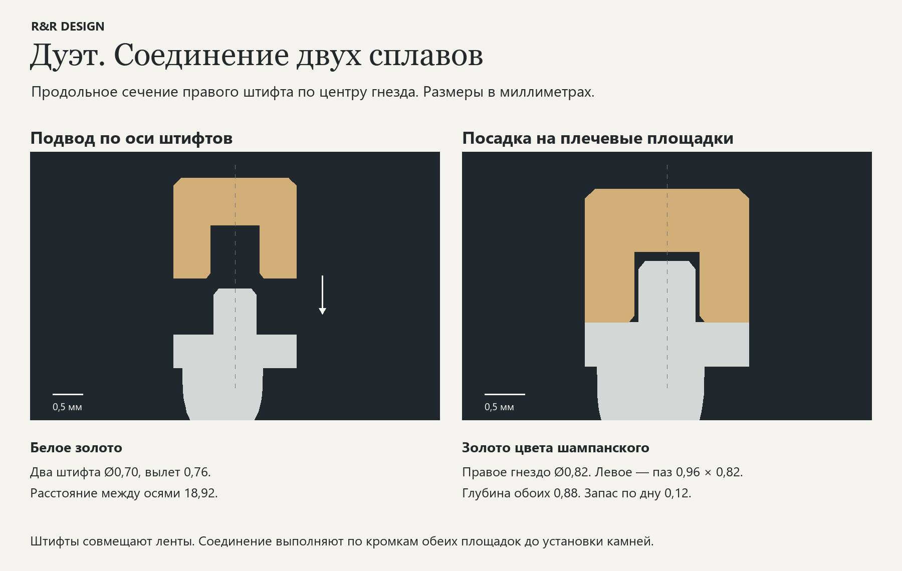
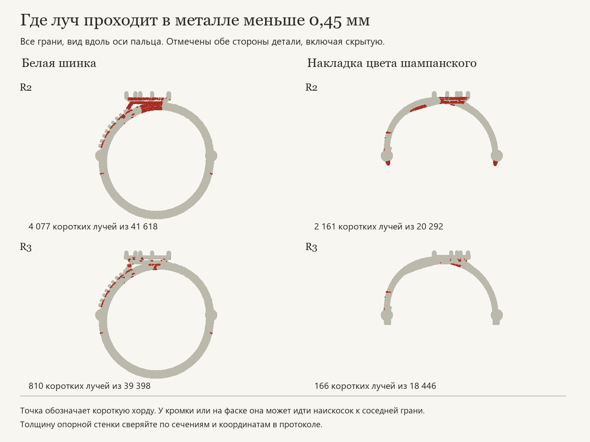

Стыковка сплавов
Белая шинка служит базой. Подвести ленту шампань по оси −Z. Правый штифт входит в круглое гнездо, левый — в продолговатое с запасом вдоль X. Межосевое расстояние 18,92 мм. Упор задают площадки вокруг гнёзд. Штифты удерживают взаимное положение при сборке; постоянное соединение создают швы.
Диаметры и гнёзда измерены на сечении 0,32 мм над плоскостью стыка. Глубины и толщины крышек измерены лучами по осям штифтов на конечных STL.

Разрез по стыку двух сплавов.
Рабочая последовательность
- Открыть White.stl и Champagne.stl в миллиметрах с общим началом координат. Предельный цилиндр вдоль оси Z проходит через собранный металл при диаметре 17,001 мм. Сохранить позицию каждой детали.
- Печатать и отливать сплавы раздельно. В файлах задана номинальная геометрия. Литейщик выбирает литники, ориентацию печати, компенсацию усадки и припуск на отделку под конкретные лигатуры и процесс. При снятии поддержек сохранить сопрягаемые площадки, штифты и запас на вершинах крапанов.
- Выполнить сухую сборку без камней. Проверить под увеличением прилегание обеих площадок и отсутствие перекоса. Закрепить отливки в приспособлении. Предлагаемая постоянная фиксация — лазерная сварка швов обоих плеч до закрепки. Совместимость сплавов, присадку и режим мастер проверяет на образце. После сварки проверить швы, размер кольца и посадки.
- Обмерить реальные вставки. Сопоставить рундисты и павильоны с гнёздами, довести уступы по фактическому камню. Груши опускаются вдоль −Y; элементы паве — по собственной нормали в сторону шинки. В пробной сборке проверить отсутствие качания, свободный павильон и положение носиков груш. Обжимать противоположные опоры постепенно, окончательно обработать свободные концы после закрепки.
Путь и посадка всех 7 вставок
Для каждого камня проверен весь объём, занимаемый при прямолинейной установке, против обоих металлов и остальных 6 камней в конечных положениях. Максимальное объёмное наложение с металлом составляет 6.31e-08 мм³ при пороге 0,000001 мм³. Максимальное наложение с другими камнями — 0,000000 мм³. Во всех положениях посадки подтверждено касание опоры.
¹ Габарит по локальным осям вставки. Для круглых рундистов дополнительно проверены максимальное расстояние между вершинами в плоскости рундиста Ø1,000 мм и минимальная ширина между параллельными касательными 0,9988 мм.
² Верх рундиста определён по верхним точкам парных вершин вдоль внешнего контура камня. От него по направлению вынимания измерена высота наивысшей вершины каждого отдельного конца заготовки. Локальный ноль приведён для сопоставления с исходными координатами.
³ Наименьшая ширина между параллельными касательными каждого контура. Сечение груш взято на +0,20 мм от верха рундиста, паве — на +0,14 мм. Все 30 концов сопоставлены с отдельными связными частями STL выше сечения. Наименьшее расстояние между свободными концами у одного камня паве выше контрольного сечения — 0,335 мм.
⁴ Наименьшее расстояние до любого металла при подъёме камня на 0,25 мм от посадки, вдоль его собственной оси. ⁵ Объём захода в опору при виртуальном продвижении на 0,025 мм глубже посадки. Это проверяет наличие упора; усилие закрепки и прочность оцениваются по образцу.
Контроль экспортов
Для каждой отливки проверены единая связная оболочка, согласованная ориентация граней и положительный объём. Габариты объектов GLB и числа треугольников сверены с финальными STL в одной системе координат.
Проверка движения двух отливок охватила полный ход 8 мм по прямой. Встречные пары треугольников проверены на перекрытие проекций и контакт по оси движения. Блокирующих пар — 0. Для прохода штифтов и упора дополнительно вычислены объёмные пересечения в исходном положении и на восьми промежуточных и крайних смещениях. Осевой порог отсечения численного шума — 0,00001 мм.
Посадки проверены для цифровых размеров в комплекте и движения без наклона. Перед выпуском в металл мастер подтверждает припуск на обработку, доставание закрепочным инструментом, литьё тонких элементов, свариваемость и усадку конкретных лигатур. После первой отливки следуют обмер штифтов и отверстий, пробная сварка и пробная закрепка.
Идентификаторы проверенных файлов
White.stl
8d2f7429211361dfe88a48426660779fe2e571def74a0760c1bd8177f65c7efe
Champagne.stl
b17b066c114a59983286f2d1f5c6c11624e02f6e7fad2de75577fdae4be9413f
Результаты для каждой вставки, измерения по каждому концу и контрольные суммы приведены в qa.json.
Толщины и самопересечения
С каждого треугольника конечных STL пущен один луч от центра грани по внутренней нормали. Начало отнесено внутрь на 0,0000001 мм. До 50 мм ищется первая отличная от исходной грань на положительном расстоянии. Порог тонкого места — строго менее 0,45 мм. Подсчёт включает наклонные и краевые попадания. Луч без выхода учтён отдельно.
Встречность определяется скалярным произведением единичных направлений выходной нормали и луча ≥ 0,5. У ребра означает, что одна из точек лежит ближе 0,075 мм к ребру с двугранным углом более 30°. Классификация помогает прочесть результат. Короткая хорда у фаски не доказывает наличие тонкой несущей стенки. Такой же короткий луч между встречными поверхностями вдали от ребра заслуживает отдельного осмотра.

Красные зоны на карте сверяются со сечениями и ID граней.
Самопересечения проверены отдельно алгоритмом CGAL по сохранённым треугольникам. Нумерация граней начинается с нуля. Для белого металла число пересекающихся пар изменилось с 160 до 0. Для металла шампань — с 0 до 0.
Проход через отмеченные участки
На обоих концах металла шампань сетка из 510 лучей пересекает материал вдоль Z при |X| = 9,10–9,50 мм и Y = −0,65…−0,30 мм. Длина каждой хорды измерена между входом и выходом. Через укороченную оконечность часть лучей проходит снаружи. В белой корзине проверены 180 азимутов через 2° на каждой из трёх высот обоих поясов. Из внутренней точки на поверхности апертуры измеряется хорда по нормали внутренней грани, спроецированной в плоскость XZ. Так фиксируется поперечная толщина материала. При проверке Y-хорд измеряется высота металла по иной оси.
В переданной точке (0,940; 10,310; −2,650) X-хорда белого металла 0,801 мм. В точке (−3,1548; 10,7300; 0,6222) Y-хорда 0,972 мм. В окрестности этой точки дополнительно проверена сетка 9 × 9 с шагом 0,015 мм вдоль X и Z. Выше указаны все короткие хорды этого участка. Оба плечевых подкоса проверены поперёк среднего участка с шагом 5° по 36 направлениям. Слева минимальная измеренная хорда 0,627 мм, справа 1,237 мм. На нижней части шинки при X=Z=0 радиальная хорда 1,359 мм. В точке (0; −9,15; 0) ширина вдоль Z равна 2,396 мм. При Y ≥ 6 мм наименьший зазор между двумя сплавами в собранном положении 0,115 мм.
Оставшиеся места для осмотра
До печати согласовать с литейщиком и закрепщиком два участка R3. В белом сплаве у края кармана паве луч вдоль Y при X = −3,760 и Z = 0,230 мм пересекает металл от Y = 10,6700 до 10,7523 мм. Длина хорды — 0,0823 мм. В сплаве шампань возле оправы индиголита луч от точки (2,428; 9,638; 2,607) мм даёт 0,1229 мм (грань 7541). Это локальные измерения на кромках. Перед печатью мастерской предстоит решить, где нужен припуск под литьё и полировку.
Приведены пространственно разнесённые короткие хорды R3 с встречными поверхностями вдали от классифицированных рёбер. Для их осмотра доступны все исходные лучи, включая расположенные у кромок. Сохранить участки под закрепку при снятии поддержек и полировании. Минимумы контрольных сечений относятся только к указанным участкам. Лучи из центров треугольников зависят от триангуляции и не дают абсолютного глобального минимума толщины. Малый зазор двух металлов над плечами проверить на сухой сборке пробных отливок.
Методика повторного запуска · Все лучи белого сплава R3 · Все лучи сплава шампань R3 · Локальные измерения R3 · Проверка самопересечений